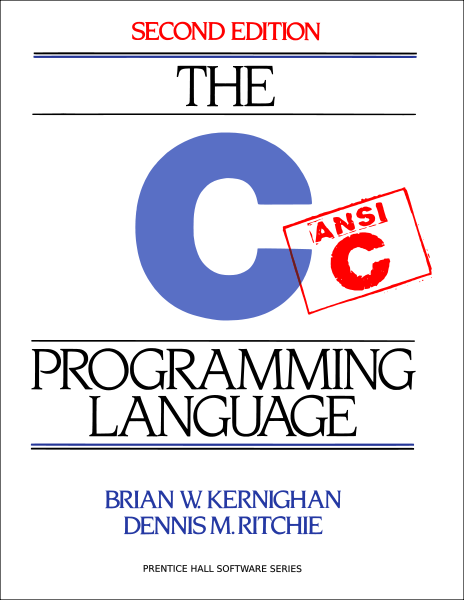

2: The C Programming Language¶
Synopsis¶
In 1973 Dennis Ritchie and Ken Thompson released the legendary C programming language while working at Bell Labs.
C, at the time of publication was the ‘highest level’ programming language in existence.
Today, it is one of the lowest level languages that are still widely used.
It is the first ‘portable’ compiled programming language, which means that C takes human code and turns it into machine code.
Before C, Computer Scientists had to write in assembly code, which usually meant that their programs
would only work on their own computers, and were not easily distributable.
What effects did it have?¶
C completely revolutionized countless industries.
We rely on things that come from C every day, and many of us don’t even realize it.
- Personal Computers
Dennis Ritchie used his C programming language to write the also legendary Unix operating system.
- Almost every single operating system in existence today is based off of Unix (except Windows).
- Mac OS
- Linux derivatives
- Companies
- Most commericial organizations rely on Unix-like computers for day to day operations.
- Unix computers have a legacy of safety, so entities like banks rely on them for security.
- The internet
- Many of servers today use software that is written in C.
- Even more servers (close to 90 percent) operate on Unix.
- Software
The two most popular programing languages today are direct descendants of C (C++ and Python).
Even those that started from scratch conform to the syntax standards set by C - everything looks like C (except python).
- Embedded systems
- Modern car dashboards, plane flight controls, digital medical equipment, cell phones, etc...
In a nutshell, almost every single digital product that we use today is a product of C, or at least has been influenced by it in some way.
Media¶
The legendary “K&R” manual for C programming, which is still studied in many Computer Science colleges.

Dennis Ritchie, before his death in 2011.